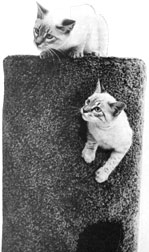
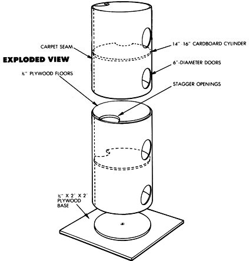

Even cats can enjoy high-rise living.
My cats, Dusty and Zing, spend hours climbing, scratching, and playing hide-andseek in my house every day. They amuse themselves on-and in-their own 5'-tall, carpet-covered kitty condo. Their favorite place to nap is in the penthouse.
The kitty condo takes only a few hours to build. A saber saw or jigsaw makes cutting the floors and doors easier, but you could do the job with hand tools. Material requirements are small too: a 5' cardboard tube between 14" and 16" in diameter, about 3 yards of scrap carpet, and 16 square feet of 5/8" or 3/4" plywood that's at least 2' wide. To assemble the kitty condo, you also need construction adhesive, carpenter's glue, a generous handful of U-shaped tacks, and a 1/4" X 1 1/4" bolt and T-nut.
There are at least two good sources for cardboard tubes. Sonotube, a cylindrical form used for poured-concrete piers, is available from concrete contractors, but the minimum purchase is usually 10' to 14' . At about $4 per foot, you'd have to find friends to go in on the purchase, or sell one or two extra kitty condos, to justify the expense.
Cardboard barrels, used to hold sweeping compound, are an alternative. You've probably seen at least one such empty barrel serving as a makeshift trash can. It may take a couple of dollars to pick up a pair, but that's still less expensive than buying 10' of Sonotube. Be sure to get the smaller size, which is 15 1/2" in diameter and anywhere from 19 1/2" to 25 1/2" tall. The barrels should be stripped of their metal and glued and duct-taped together.
The doorways are 6"-diameter holes placed in the center of each of the four stories. Find their positions by dividing the height of the tower by 8, positioning the first hole that distance from the bottom, and placing the others twice that distance apart. For example, if the condo is 48" tall, place the first hole 6" above the bottom, the next 12" above that, and so on.
First, cut the 2' -square piece of plywood that forms the base. Then measure the inside diameter of your tube, and mark five circles of that diameter on the plywood. You can get five plywood disks up to 16" in diameter from the remaining 12 square feet of plywood, as long as you stagger their layout. Cut the disks out, and trim a 3"-radius semicircle from the edge of four of them. These openings will let your feline friends move up and down inside the condominium. The fifth disk will be the bottom floor, so you need not saw a semicircle in it.
To attach the bottom floor to the base (the 2' square), find the centers of both pieces (by drawing diagonals in the case of the square), and drill 5/16" holes through them to accommodate the 1/4" mounting bolt. Pound the T-nut into the hole in the disk, and countersink the bottom of the square for the bolt's head.
At this point, if you've got lots of carpet, go ahead and cover the disks. Otherwise, make a cardboard or paper template of a trimmed floor, so you'll have an exact shape when the time comes to cut the carpet.
Install the floors in the condo from the bottom up, securing each one with carpenter's glue as you go, and sinking 6d common nails to hold them while the glue sets. Position the full disk flush with the bottom, a trimmed disk equidistant from the bottom and the middle, another at the middle (bridging the joint if you used barrels), and so on to one flush with the top. Stagger the openings so one is not directly above another, and make sure none is opposite a door.
Determine the amount of carpet required to completely encircle the tube by wrapping the carpet around it. Pull the carpet tight, mark the location of the seam, and cut it with sharp scissors. Position the carpet so that the seam is directly opposite the doors, and glue it to the tube with construction adhesive. (Be sure to place a bead of adhesive around each door opening.) Tack the seam of the carpet to the edge of each floor with U-shaped tacks (they won't pull through the roving), and tack the edges of the carpet to the top and bottom disks every 4".
Once the glue has set, cut the carpet from the doorways with a butcher knife. If you happen to have a right-hand (red) pair of aviation metal snips, they'll work great for final trimming.
If you haven't already cut out the floor carpets, do so. Then stick them on with construction adhesive. Carpet the base-leaving an uncovered area where the mounting bolt will pass-and tack the carpet to the edge of the plywood where it wraps around. To complete the condo, bolt the tower to the base with the 1/4" bolt.
The trick to any successful condominium development is finding occupants, and Dusty and Zing did need a little incentive to move in. I made up some catnip tea and sprayed it on the carpeting inside the rooms. This sales plan worked like a charm, and it proved to be a good deal less costly than a free Bahamas cruise.
|
 |
 |
|